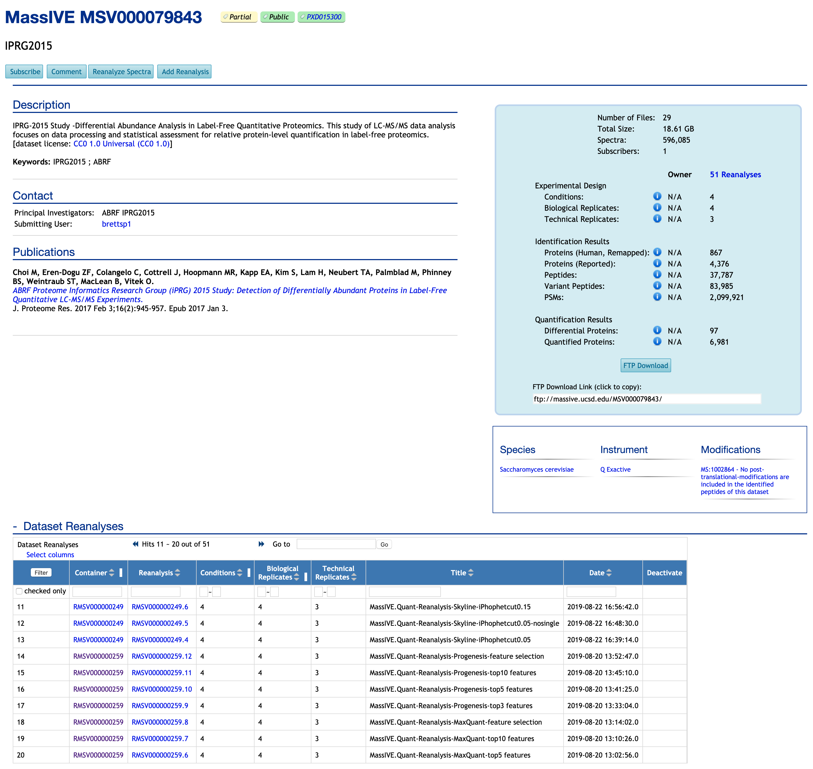
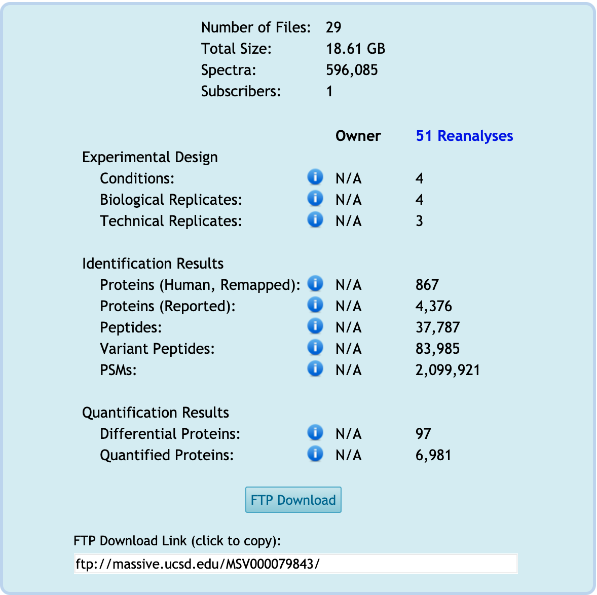

Each dataset has its page. Here is the example of one dataset, MSV000079843.
Dataset page
If you know the dataset MSV ID or PXD ID, such as MSV000079843 or PXD015300, you can search in the main MassIVE webpage.

Title
It shows the title that the submitter provided in the MassIVE dataset Submission workflow. For this dataset, 'iPRG2015'.
Description
It shows the description that the submitter wrote in the MassIVE dataset Submission workflow.
Contact
It shows the contact information about the owner or submitter of this dataset.
Publications
It shows the publication related to this dataset. The publication includes all the details associated with this dataset.
Dataset Reanalyses
At the bottom of this page, there is the table to show the list of reanalyses in this dataset. For this example, there are 3 containers and 51 reanalyses available in this dataset. Each container and reanalysis has their RMSV ID. If you click any RMSV ID, you will move to the webpage for specific RMSV.
Summary table for this dataset
There is the summary box on the left of this page. It shows the simple summary of experimental design, identification result, and quantification/statistical analysis for this dataset.

-
Owner column: 'Owner' means the submitter who designed the experiments, set up this dataset, and submitted files, including raw.files, for the first time. The column of 'Owner' shows a summary of what the owner provided.
-
Reanalysis column: First, it shows how many reanalyses are included in this dataset. The column of 'Reanalyses' is the summary of all reanalyses in this dataset. For this example, 51 reanalyses are available in this dataset. The column of '51 Reanalyses' is the summary of 51 reanalyses.
-
N/A: Not available. The information corresponding to the summary is not submitted. For example, MassIVE.quant can't count the number of Conditions, Biological Replicates, or Technical Replicates if the owner didn't provide any files in
Metadatacategory. Then, 'N/A' will be shown in the 'Owner' column for 'Experimental Design'. -
i in the blue circle: Detailed information for each row.
-
Experimental Design: The summary of detected experimental design from
Metadatacategory.-
Conditions: Number of distinct conditions across all analyses (original submission and reanalyses) associated with this dataset. Distinct condition labels are counted across all files submitted in the
Metadatacategory having aConditioncolumn in this dataset. For this dataset, the owner didn't submit any file in theMetadatacategory ('N/A' shown). However, reanalyses submitted this information. There are four conditions across all files in theMetadatacategory in this dataset's reanalyses. -
Biological Replicates: Number of distinct biological replicates across all analyses (original submission and reanalyses) associated with this dataset. Distinct replicate labels are counted across all files submitted in the
Metadatacategory having aBioReplicateorReplicatecolumn in this dataset. For this dataset, the owner didn't submit any file in theMetadatacategory ('N/A' shown). However, reanalyses submitted this information. Four unique IDs for biological replicates are available across all 'annotation.csv' files in theMetadatacategory in this dataset's reanalyses. -
Technical Replicates: Number of distinct technical replicates across all analyses (original submission and reanalyses) associated with this dataset. The technical replicate count is defined as the maximum number of times any one distinct combination of condition and biological replicate was analyzed across all files submitted in the
Metadatacategory. In the case of fractionated experiments, only the first fraction is considered. For this dataset, the owner didn't submit any file in theMetadatacategory ('N/A' shown). However, reanalyses submitted this information. The Maximum three technical replicates for the corresponding biological replicate are available across all reanalyses in this dataset.
-
-
Identification Result: The summary of the identifications from searching the dataset in
Result Filescategory.-
Protein (Human, Remapped): Originally identified proteins that were automatically remapped by MassIVE to proteins in the SwissProt human reference database.
-
Proteins (Reported): Number of distinct protein accessions reported across all analyses (original submission and reanalyses) associated with this dataset.
-
Peptides: Number of distinct unmodified peptide sequences reported across all analyses (original submission and reanalyses) associated with this dataset.
-
Variant Peptides: Number of distinct peptide sequences (including modified variants or peptidoforms) reported across all analyses (original submission and reanalyses) associated with this dataset.
-
PSMs: Total number of peptide-spectrum matches (i.e. spectrum identifications) reported across all analyses (original submission and reanalyses) associated with this dataset.
-
-
Quantification Result: The summary of the result for statistical analysis from
Statistical Analysis of Quantified Analytescategory.-
Differential proteins: Number of distinct proteins found to be differentially abundant in at least one comparison across all analyses (original submission and reanalyses) associated with this dataset. A protein is differentially abundant if its change in abundance across conditions is found to be statistically significant with an adjusted p-value <= 0.05 and lists no issues associated with statistical tests for differential abundance. Distinct protein accessions are counted across all files submitted in the
Statistical Analysis of Quantified Analytescategory having aProteincolumn in this dataset. For this dataset, the owner didn't submit any file including adjusted p-value column in theStatistical Analysis of Quantified Analytescategory ('N/A' shown). However, reanalyses submitted this information. 97 distinct protein accessions are significantly different for at least one pairwise comparisons across 51 reanalyses. -
Quantified proteins: Number of distinct proteins quantified across all analyses (original submission and reanalyses) associated with this dataset. Distinct protein accessions are counted across all files submitted in the
Statistical Analysis of Quantified Analytescategory having aProteincolumn in this dataset. For this dataset, the owner didn't submit any file including adjusted p-value column in theStatistical Analysis of Quantified Analytescategory ('N/A' shown). However, reanalyses submitted this information. 6,981 distinct protein accessions were quantified and tested by MSstats across 51 reanalyses.
-
Button : FTP Download
All the submitted files in the reanalysis are available for downloading from FTP. See here for detailed instructions on how to download the files in any category.